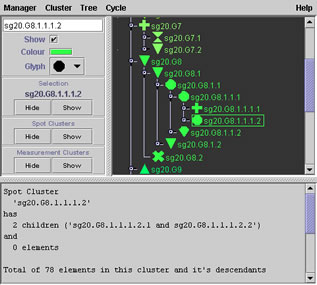
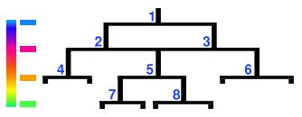
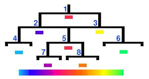

The Cluster Manager shows the current cluster hierarchy and provides controls for loading, saving, and manipulating clusters.
Drag-and-drop can be used to find clusters in the hierarchy (by dropping a Cluster onto the tree) or to cause clusters to be displayed in viewers (by dragging a Cluster from the tree).

The Cluster Manager is divided into three panels which can be resized using the thick inner dividing bars.
The Cluster Tree appears in the top right panel
Cluster Controls for the selected cluster are in the top left panel.
Cluster Infomation for the selected cluster is displayed in the bottom panel.
The top right panel displays the clusters in a tree in which individual branches are expanded or collapsed by clicking on the small switches next to them.
Single clicking on a cluster makes it the selected cluster. The selected cluster is name indicated by a box around its name in the tree display.
Double clicking on a cluster with no children toggles the visibilty of the cluster. If the cluster is currently visible, it is hidden and vice versa.
Double clicking on a cluster that has children causes the branch to be expanded if it is not already so, otherwise it is collapsed.
You can use Drag-and-drop to take a cluster from this panel to another plugin. If a cluster is dropped on the tree, the tree branches will be exanded as required to reveal the cluster.
In the top left panel are controls for manipulating the selected cluster.
A type-in text field allows to to change the name of the cluster. (You must press RETURN to commit the name change.)
The "Show" checkbox controls whether the cluster is visible or not. If the cluster has children, their visibilty is also controlled by this switch.
The "Colour" and "Glyph" controls are used to alter the display attributes of the cluster and its children.
When the selected cluster has no children, pressing the "Colour" button displays a conventional colour picking dialog box. When the cluster has got children, the Colour Selector dialog is used instead.
The "Glyph" dropdown menu selects which of the glyph shapes will be used for the selected cluster. If the cluster has children, then the same glyph will be assigned to all of the children.
When the selected cluster has children, an extra option is available in the "Glyph" menu. Cycle mode (shown as rotating arrows) causes the parent to allocate different glyphs to each of its children.
The "Selection" area shows the name of the currently selected node and contains buttons which "Hide" or "Show" this cluster.
The "All Clusters" area contains buttons which "Hide" or "Show" all clusters except the selected cluster.
The bottom panel displays the names of the elements in the currently selected cluster. This panel also shows how the cluster was defined, whether by Spot names, in which case the cluster is specific to this array type, or by Probe or Gene names, in which case the cluster can be applied to data from other sources.
Manager menu:
| Load | reads clusters from a
file. The new clusters are added either as children of the Root
cluster or as children of the selected cluster depending on the
"Insert Where?" setting.
Files may be in one of three formats:
|
| Save | writes clusters to a
text file.
The "Which Clusters?" lets you select between saving all clusters, just those that are visible or just the currently selected cluster. When "Include Children?" is enabled the children of clusters are output, otherwise they are not included. The clusters can be saved as either the "Native" XML format (see File Formats) or as "List of Names". |
| Close | shuts the Cluster Manager window (the clusters are not removed) |
Cluster menu:
| Find | searches for a cluster by name |
| Create | constructs a new
cluster as one of:
|
| Delete | removes the currently selected cluster (and all of its children) |
| Re-parent | displays a dialog box allowing you to pick a new parent for the currently selected cluster. The cluster will be detatched from its current parent and added as a child of the chosen new parent. |
| Collapse | moves all elements from the children of the selected cluster into the selected cluster itself. The (now empty) children of the selected cluster are then removed. |
Tree menu:
| Expand fully | opens all of the branches in the tree. |
| Collapse | close all of the branches in the tree. |
| Background | allows you to change the colour used by the tree panel to make the cluster colours more easily visible |
Cycle menu:
| Enable | the automatic cycling of cluster visibility using this checkbox. |
| Descend | determines whether the to descend the entire tree or just travel through the children of the selected cluster. |
| Speed | can be set to slow, medium or fast. |
The 'cycle' feature is useful when you have lots of clusters on a plot and cannot see the scope of individual features. When enabled, cycle mode toggles each cluster on and off in turn, travelling either sequentially through the children or down the tree from the current position to the bottom. Once all clusters have been displayed, the process begins again at the top of the tree, or first child, and continues until you disable the cycle feature.
The Colour Selector allows you to apply colour ramps to the children of a cluster. This can make it easier to work out which clusters belong together when viewing cluster overlays.
There are two modes of operation; fixed and blend. In fixed mode the cluster and all of its children are set to the same colour. In blend mode, two colours are chosen and a range of colours is blended from them. This colour range is then distributed to the children of the cluster.
In fixed mode a single colour button is displayed, whereas in blend mode a `from' colour and a `to' colour are displayed. These are the colours that will be used to make the blend colours. Click on a colour button to display a colour picker.
The full range of options are only available when "Apply to children" is selected. When "Apply to children" is not selected, only the "Fixed" mode is available.
Blend mode is available in two flavours:
"Blend HSB" generates a range of colours by interpolating the "hue" spectrum. This is the rainbow-like spectrum of colours often seen in computer graphics applications. The HSB colour space can be explored using the "HSB" panel on the standard Java colour picker that appears when you select either blend colour.
"Blend RGB" generates a range of colours by interpolating red, green and blue values directly.
The blended colour range is assigned to the children of a cluster in one of two ways:
"Colour by depth" assigns colours to the children based on how deep they are in the tree. All clusters at the same depth will be coloured the same.

In this example the cluster tree has a depth of 4. Colours are blended at 4 equidistant points in the colour range and assigned to the children in depth order. Cluster `1' is at the top and will be coloured blue. Clusters `2' and `3' are at depth 1 so they are coloured pink. Clusters `4', `5' and `6' are coloured orange because they are at a depth of 3. Finally, clusters `7' and `8' are the deepest and will be coloured green.
"Colour by breadth" recursively splits the range into pieces for each child such that all the of leaf nodes get a unique colour.

This example uses the same cluster tree and colour range. The colours are assigned to clusters based on where they lie when the cluter tree is laid out along the colour range. Cluster `1' is in the center and will get a colour from the middle of the range. Cluster '4' is at the far left and is coloured blue and cluster '6' at the far right is coloured green. Other clusters are coloured based on their position in the colour range as indicated. Note that some branch nodes can be coloured that same (e.g. clusters '1' and '5') , but that no leaf nodes can share the same colour.
See also: